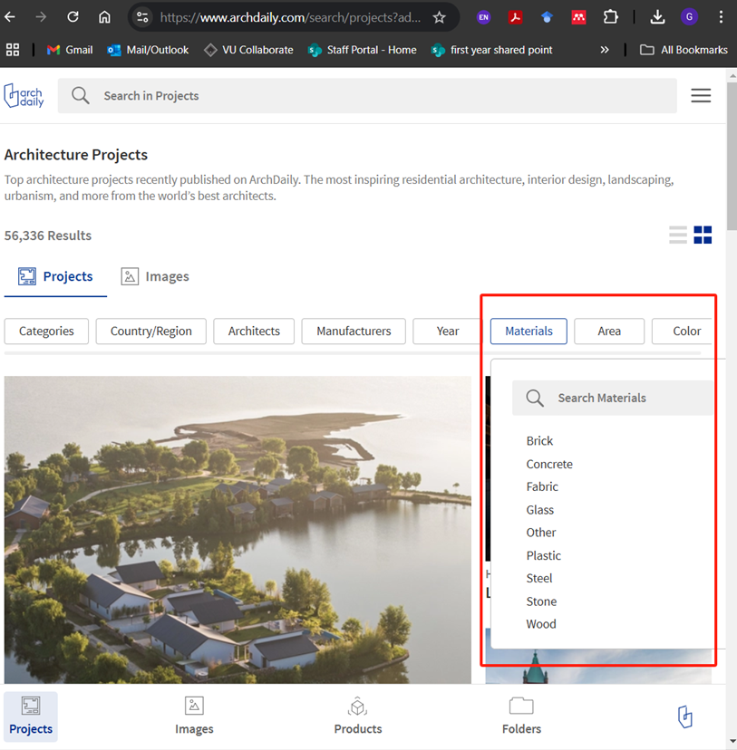

Session 8
Activity 1: Choose A Case Study And Analyse The Material
Go to ArchDaily and search project by material. Choose a project and a material you would like to work with for the group final project. Study how the material has been used in the choose project? Is it a part of the structure or just the façade and interior? Discuss this with the instructor in a studio mode. Part 2 of today’s session will be design development in studio mode.

Session 8: RVT File
Please download a copy of the following document: Session 8 RVT File